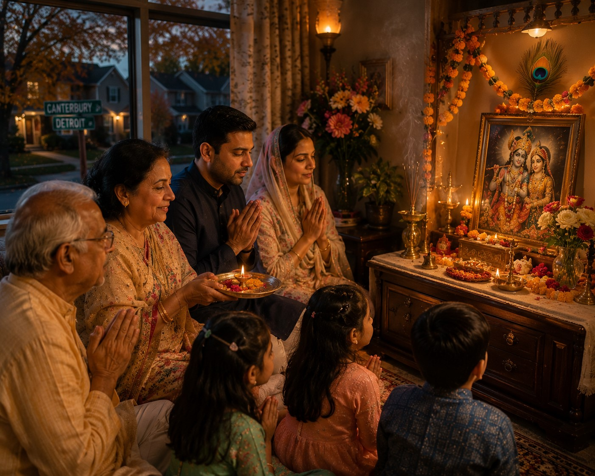

तव कथामृतं तप्तजीवनं
कविभिरीडितं कल्मषापहम् ।
श्रवणमङ्गलं श्रीमदाततं
भुवि गृणन्ति ये भूरिदा जनाः ॥
Tava kathāmṛtaṃ tapta-jīvanaṃ / kavibhir īḍitaṃ kalmaṣāpaham / śravaṇa-maṅgalaṃ śrīmad-ātataṃ / bhuvi gṛṇanti ye bhūridā janāḥ
The nectar of Your stories is the life of those who suffer. Sung by the wise, it removes all sins, is auspicious to hear, and fills the world with glory — those who spread these stories are the most generous of all. (Bhagavata Purana 10.31.9 — the gopis' song, on the gift of those who carry Krishna's story)
Mathura
Krishna Janmabhoomi: The Prison Cell
The Krishna Janmabhoomi complex in Mathura marks the spot of the prison cell where Krishna was born. The site carries its contested history visibly — the mosque built by Aurangzeb's order in 1670 on the plinth of the demolished Keshav Dev temple stands adjacent to the temple rebuilt in the 20th century. The legal proceedings over the land adjacent to the mosque are ongoing.
What the site communicates, regardless of its history, is the first teaching of the Mathura phase: the divine enters the world at its most constrained. A prison cell. Chains on his parents' wrists. A tyrant waiting to kill him. And yet — the chains fell, the doors opened, the guards slept. Visit this site not as a heritage tourist but as someone reading the first page of a theological argument. The argument begins here.
Mathura
Dwarkadhish Temple: Devotion and Responsibility
The Dwarkadhish Temple, also in Mathura, enshrines Krishna in his role as king — Dwarkadhish means Lord of Dwarka. This is Krishna after Vrindavan, after the killing of Kamsa, after the establishment of his own kingdom. The imagery here is different from Banke Bihari's child-Krishna — here is the mature king, the statesman, the one who will stand on the battlefield of Kurukshetra and deliver the Gita.
Devotion and responsibility are not opposites. The Vrindavan phase was not the whole story. Krishna did not remain in the forest playing the flute. He returned, acted, ruled, fought when dharma required it. The Dwarkadhish temple holds the second half of that arc. Both temples in Mathura — Janmabhoomi and Dwarkadhish — are necessary for the complete picture.
Vrindavan
Banke Bihari: The Divine on Its Own Terms
At Banke Bihari temple in Vrindavan, the curtain before the deity opens and closes every few seconds. This is not technical malfunction. It is the practice of the temple — initiated five hundred years ago and maintained without interruption since. The story behind it: the child Krishna, upon seeing the intensity of devotion in the worshippers' eyes, flinched. His caretakers, wishing to protect him from the overwhelming weight of so much love directed at once, instituted the curtain's rhythm. A few seconds of darshan. Then the curtain closes. Then it opens again.
The temple was established by Swami Haridas — the teacher of Tansen, who became Akbar's court musician. Tansen learned music from Haridas, who was himself a saint of the highest order. The deity at Banke Bihari was not installed through formal consecration ritual. According to the tradition, Swami Haridas's singing was so pure that the deity manifested from the earth in response to the music. The divine arrived through music, not through ceremony.
At Banke Bihari, there is no conch shell blown, no lamp waved in the aarti that most temples observe. Because once, long ago, the infant Krishna startled at the sound of the conch. Five centuries of practice have preserved that single moment of divine childhood. The divine revealed in glimpses, on its own terms, not on ours — this is what the curtain teaches.
Vrindavan
Nidhivan and Govardhan: The Unwitnessed and the Walked
Nidhivan is a grove in Vrindavan that is locked after sunset. No one enters. According to the tradition, the Raas Leela — the divine dance described in the Bhagavata Purana — takes place here still, every night, unseen. Trees in the grove are said to transform at night. The locked gate is not superstition — it is the acknowledgment that some dimensions of tradition are not meant to be witnessed, only acknowledged. Not everything that is real is visible.
Govardhan Hill, about 15 miles from Vrindavan, is where Krishna lifted the mountain. Pilgrims still walk the 14-mile parikrama — the circumambulatory path around the hill — on their knees, on foot, in silence, alone, in groups. Some complete it in a day. Some take longer. The hill itself has shrunk over centuries, according to the tradition — it recedes from those who approach it with ego and reveals itself to those who approach with humility. The parikrama continues. Devotees are still walking around the hill Krishna lifted 5,000 years ago. Devotion and geography are still connected here — the land and the practice are inseparable.

Detroit, Michigan — the tradition that survived Aurangzeb also survived January in Troy
Detroit
The Live Node
The tradition that began in Mathura 5,000 years ago reached Detroit within living memory. The Bharatiya Temple in Troy, the Hindu Temple in Canton, the ISKCON Temple in Detroit — these are not ethnographic institutions maintaining a cultural practice for documentation purposes. They are living expressions of a transmission that has never been interrupted, from the Bhagavata Purana through the bhakti saints through grandmothers through Prabhupada's arrival in New York in 1965 with $7 and a trunk of books.
The Michigan winter is not the Yamuna in monsoon flood. But the principle is the same: a tradition that is carried with genuine commitment survives the conditions it lands in. The tradition that survived Aurangzeb also survived Troy, Michigan in January. The bhajans that were sung in Vrindavan are sung here. The prasad that was prepared at the Banke Bihari temple is prepared in Canton and Troy and Farmington Hills. The children who grow up in these communities carry something they will not fully understand until they are older — and then they will understand it all at once, the way the gopis understood the Yamuna at night.
Vrindavan is not a place you visit. It is a place that stays inside you — in the bhajans you hear as a child, in the smell of the tulsi, in the way the Yamuna looks at dawn. When I come to Detroit and see this community keeping these traditions alive with such love, I feel Vrindavan is not so far away after all.
G R Dev · Brijwasi by heart · Detroit, MI often